Contents
STUDY SPARSE HIERARCHIES
Bijan Ranjbar-Sahraei
The PBE and DBE models are both designed based on a complete network, here we look at the strength distribution of networks with other structures!
close all clear all clc n = 10; % umber of nodes
Generating a full hierarchy
Define the Hierarchy relations by using a binary n x n matrix the element [i,j] of H is 1 if i is superior to j.
H = tril(ones(n,n),-1); % ASONAM model H(1,1) = 1; W = genericModel(H); % compute the CCDF for W ccdf_x = 1:.1:max(sum(W,2)); % the partitions of the x-axis df_hist = hist(sum(W,2),ccdf_x); ccdf_hist = cumsum(df_hist(end:-1:1)); ccdf_hist = ccdf_hist(end:-1:1); % computing the cummulative degree distribution % plotting figure loglog(ccdf_x, ccdf_hist,'-o') hold on loglog(ccdf_x, n * ccdf_x.^(-2),':') % approximation of power law loglog(ccdf_x, n * ccdf_x.^(-1),'-.') % approximation of power law legend('data','\alpha=2','\alpha=3')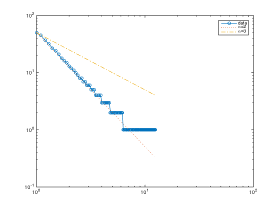
Generating a full hierarchy
Define the Hierarchy relations by using a binary n x n matrix the element [i,j] of H is 1 if i is superior to j.
for kk = 1 : 20 H = tril(rand(n,n)>kk/20,-1); % ASONAM model 20/kk for i = 1 : n if sum(H(i,:)) == 0 H(i,i) = 1; end end W = genericModel(H); % compute the CCDF for W ccdf_x = 1:.1:max(sum(W,2)); % the partitions of the x-axis df_hist = hist(sum(W,2),ccdf_x); ccdf_hist = cumsum(df_hist(end:-1:1)); ccdf_hist = ccdf_hist(end:-1:1); % computing the cummulative degree distribution % plotting figure loglog(ccdf_x, ccdf_hist,'-o') hold on loglog(ccdf_x, n * ccdf_x.^(-3),':') % approximation of power law loglog(ccdf_x, n * ccdf_x.^(-2),':') % approximation of power law loglog(ccdf_x, n * ccdf_x.^(-1),'-.') % approximation of power law legend('data','\alpha=4','\alpha=3','\alpha=2') end
ans =
20
ans =
10
ans =
6.6667
ans =
5
ans =
4
ans =
3.3333
ans =
2.8571
ans =
2.5000
ans =
2.2222
ans =
2
ans =
1.8182
ans =
1.6667
ans =
1.5385
ans =
1.4286
ans =
1.3333
ans =
1.2500
ans =
1.1765
ans =
1.1111
ans =
1.0526
ans =
1
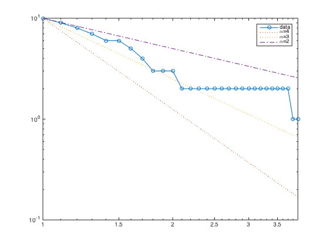 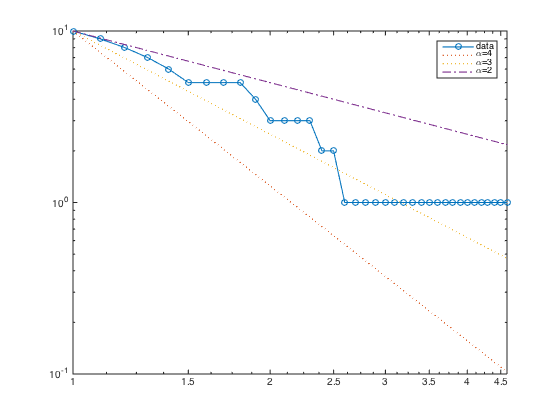 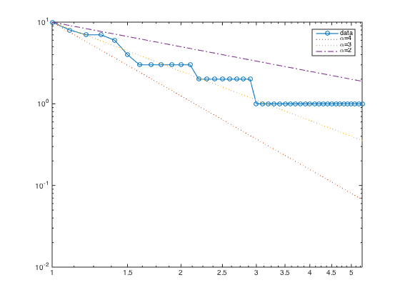 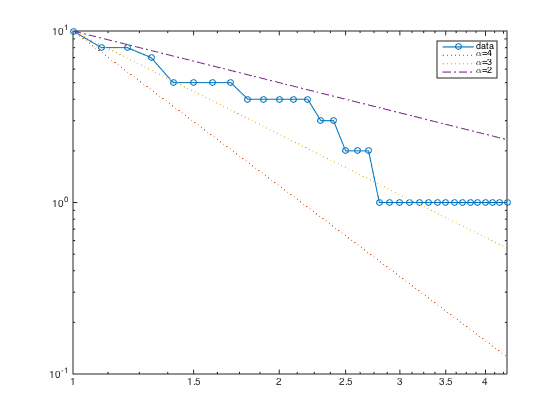 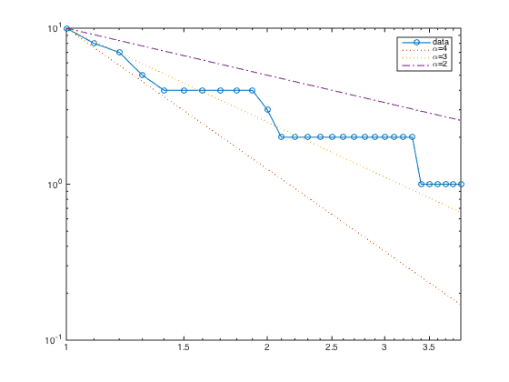 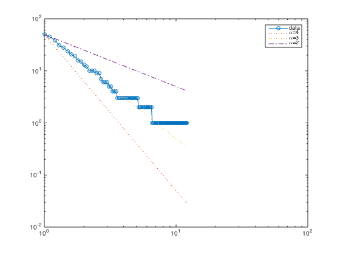 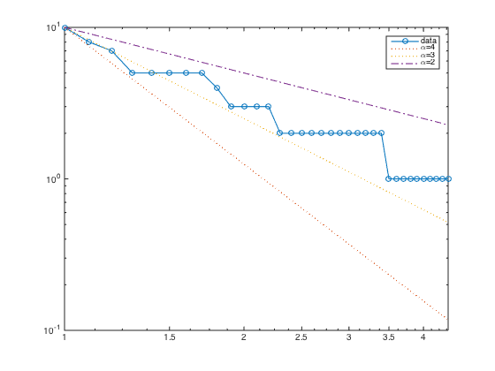 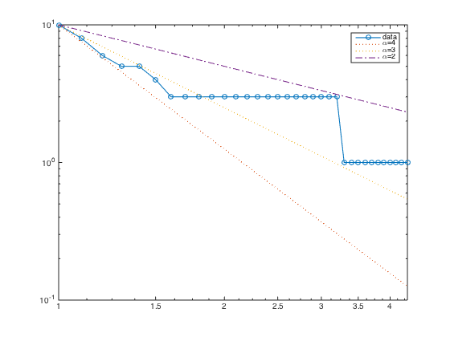 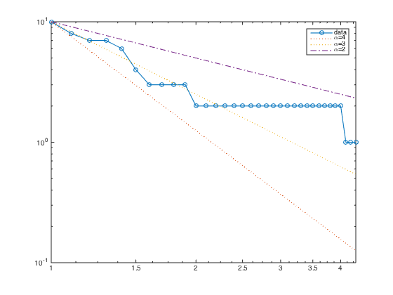 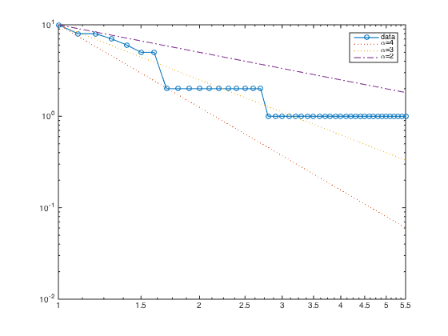 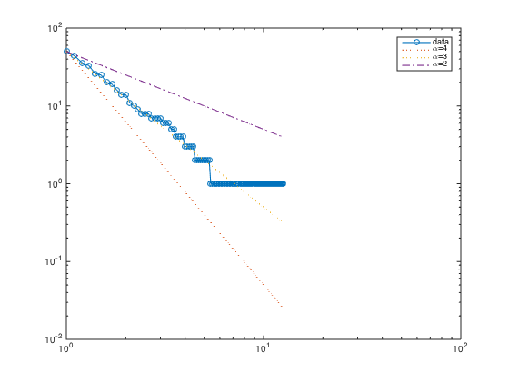 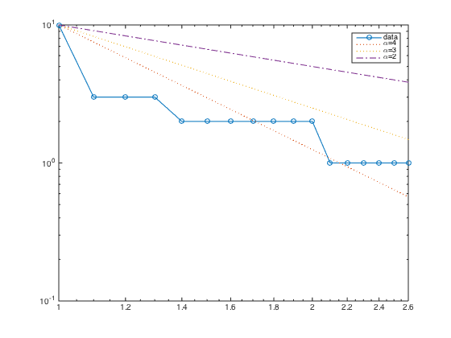  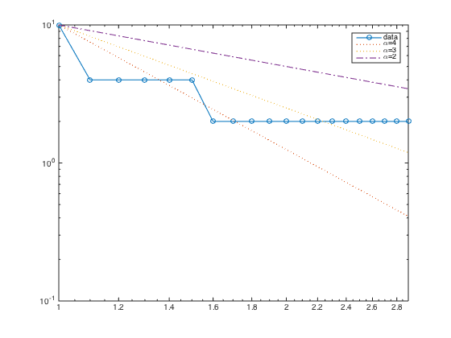 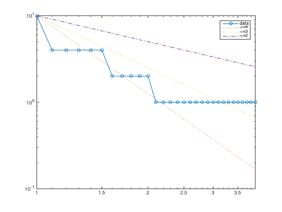 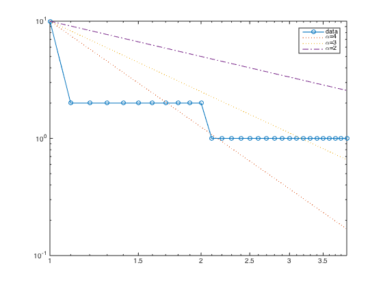 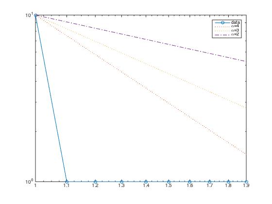 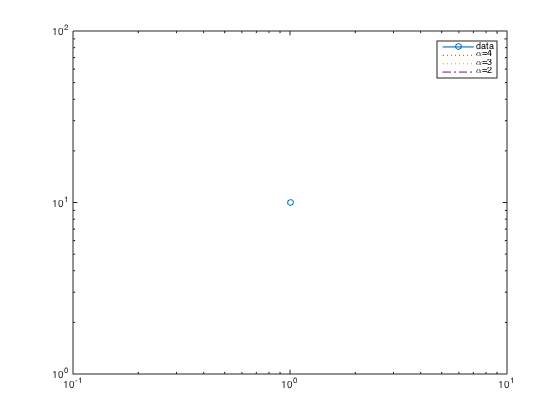 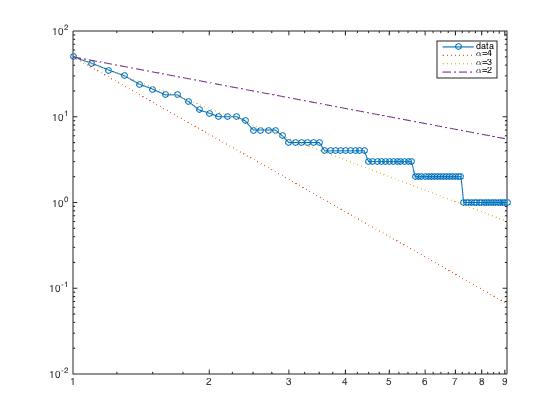 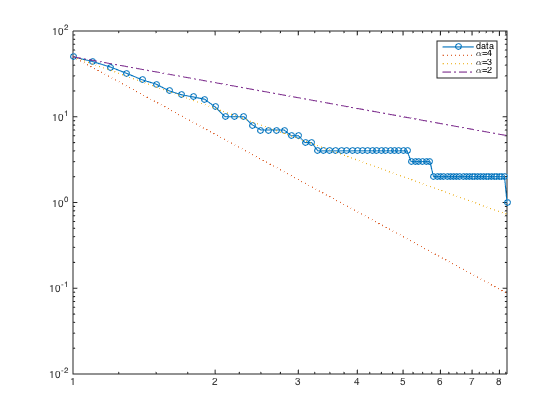
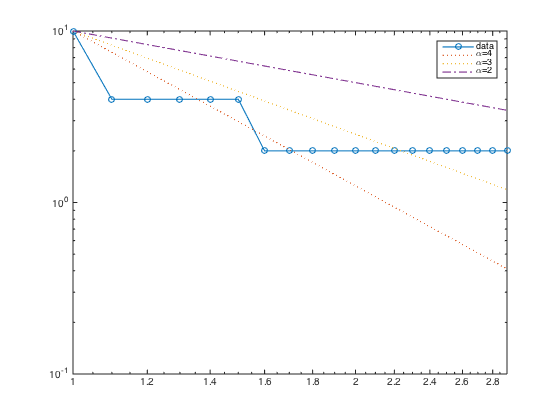 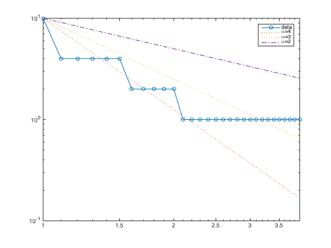 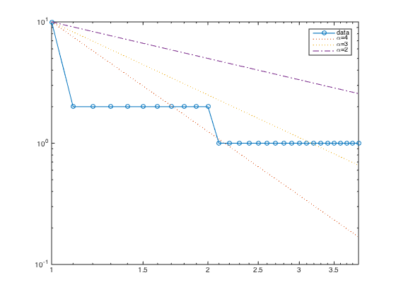 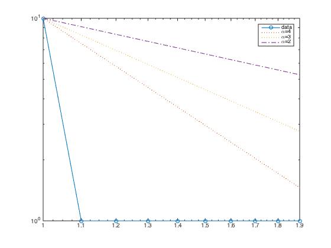 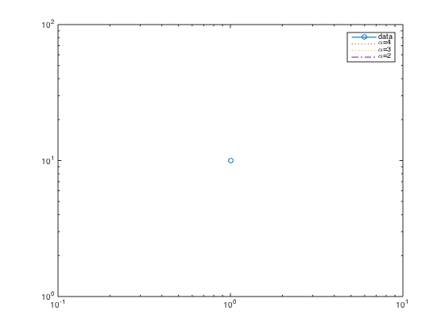 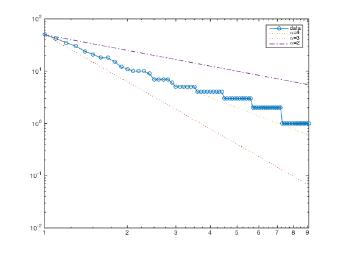 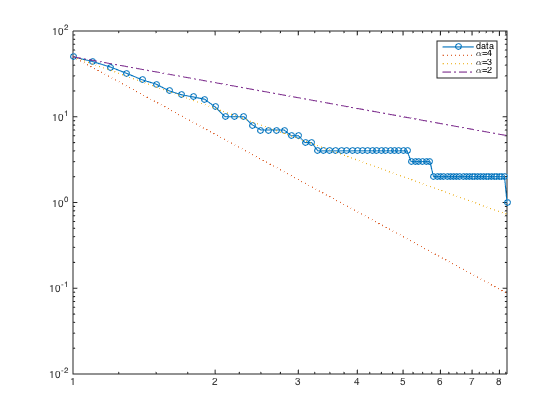